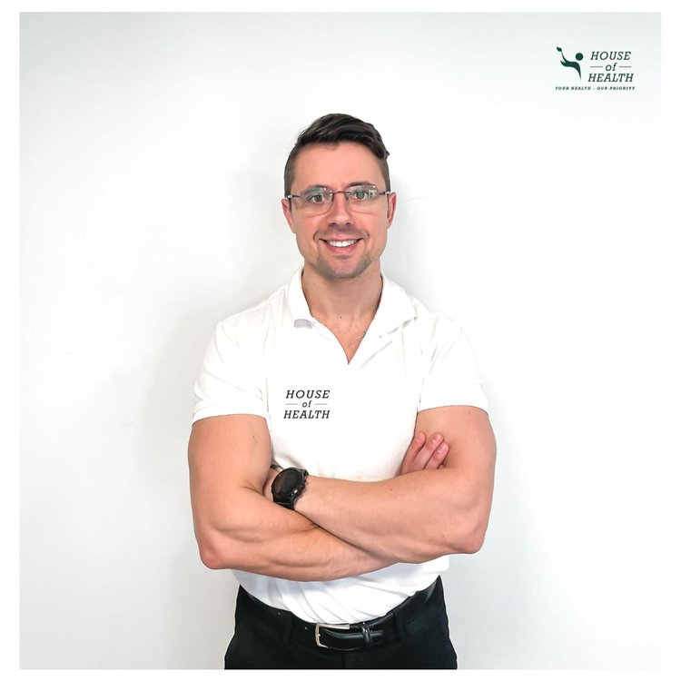

Bli kjent med oss
Hvem er Stavros Litsos?

Fagansvarlig Manuellterapeut
Jeg behandler alle ledd-, muskel- og seneplager, både akutt, kronisk og forebyggende. Jeg er opptatt av helheten, og det er derfor jeg bruker tid på å identifisere årsaken til plagene dine – fremfor bare å behandle symptomene.
Jeg samarbeider med fastleger, røntgeninstitutt og spesialisthelsetjenesten, og henviser pasienter videre til spesialister og MR-, CT- og røntgenundersøkelser når det er nødvendig. Jeg jobber også tett med kolleger som en del av tverrfaglig oppfølging.
Jeg hjelper deg med:
- Idrettsskader
- Skulderplager
- Albue- og håndleddskader
- Hofte-, kne- og fotskader
- Rygg- og nakkeplager
- Hodepine